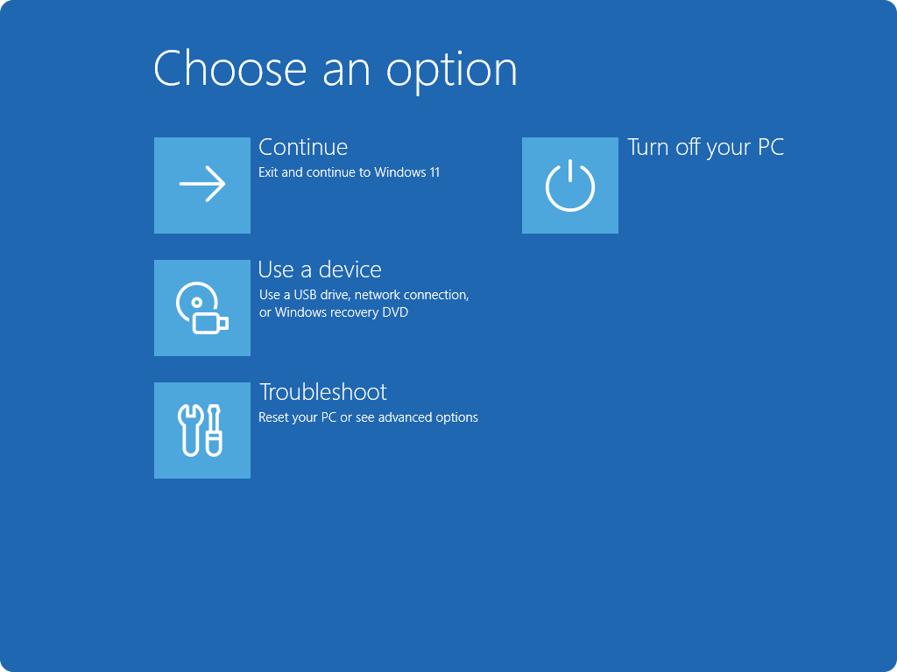

Introductie Windows¶
1. Besturingssystemen¶
Besturingssystemen vallen over het algemeen in vier grote categorieën:
- Desktop: een desktopbesturingssysteem is ontworpen voor algemeen gebruik door eindgebruikers op pc's en laptops, zoals Windows, macOS, ChromeOS en Ubuntu.
- Server: een serverbesturingssysteem biedt één of meer diensten aan andere computers of toestellen binnen een netwerk. Voorbeelden zijn Windows Server, Ubuntu Server en Red Hat Enterprise Linux.
- Mobile: een mobiel besturingssysteem is specifiek ontwikkeld voor mobiele toestellen zoals smartphones en tablets, zoals Android en iOS.
- Embedded: een embedded besturingssysteem is ontworpen om te draaien op specifieke, vaak beperkte hardware, zoals netwerkapparatuur, betaalterminals, kassa's, medische apparatuur, enz.
Tijdens Windows Essentials richten we ons op Windows als desktopbesturingssysteem.
| Besturingssysteem | Marktaandeel desktop |
|---|---|
| Windows | 71,18% |
| OSX | 19,82% |
| Linux | 7,53% |
| ChromeOS | 1,47% |
| Bron: Statcounter (juli 2026) |
Statcounter: Desktop Market Share Worldwide
Voordat je Windows installeert, moet je het volgende bepalen:
- Welk type gebruiker zal zich aanmelden op het toestel?
- Welke Windows-editie ga je installeren?
- Op welke architectuur ga je Windows installeren?
2. Edities¶
Tijdens de installatiewizard van Windows moet je een editie kiezen, die bepaalt welke functionaliteiten beschikbaar zijn. Je moet ook een licentie aankopen om de gekozen editie te mogen gebruiken. De meest voorkomende Windows-edities zijn:
Home
Home is de Windows-editie die meestal vooraf geïnstalleerd is op consumententoestellen. Deze editie biedt alle nodige functionaliteiten voor thuisgebruikers.
Pro
De Pro-editie is bedoeld voor prosumers en kleine bedrijven. Ze biedt de functionaliteit om Windows-toestellen centraal te beheren. De belangrijkste verschillen met de Home-editie zijn:
- Remote Desktop: een tool om een toestel op afstand te beheren
- Hyper-V: virtualisatie
- BitLocker
- Group Policy Management
Enterprise
Deze Windows-editie is bedoeld voor middelgrote en grote bedrijven en biedt extra beveiligingsfuncties ten opzichte van de Pro-editie. Deze editie is vereist om alle instellingen en functies in Microsoft 365 te kunnen gebruiken.
Education
Deze Windows-editie is uitsluitend bedoeld voor gebruik binnen onderwijsinstellingen. Ze biedt dezelfde functionaliteit als de Enterprise-editie, maar de licentieprijs is verlaagd voor onderwijsdoeleinden.
Microsoft: Windows-edities
Een uitgebreid overzicht van de verschillen in functionaliteit tussen de Windows-edities:
Andere edities¶
De bovenstaande Windows-edities zijn de meest voorkomende; er bestaan ook nog enkele andere edities:
- Pro for Workstations: identiek aan de Pro-editie, aangevuld met het bestandssysteem ReFS.
- IoT Enterprise: een editie die ontworpen is voor gebruik op embedded systemen.
- Enterprise Multi-Session: deze editie is ontworpen om een Windows-toestel aan te bieden in de dienst Azure Virtual Desktop. Daarmee kunnen meerdere gebruikers verbinden met hetzelfde virtuele toestel. Identiek aan de Enterprise-editie, maar met de toevoeging dat meerdere externe sessies toegelaten zijn.
N-editie¶
Voor elke Windows-editie bestaat er ook een N-editie, specifiek ontworpen om te voldoen aan de Europese regelgeving. Die regelgeving geeft gebruikers de vrijheid om hun eigen multimediatoepassingen te kiezen. De N-edities van Windows 11 bieden dezelfde functionaliteit als de andere edities, maar bevatten geen mediagerelateerde technologieën zoals Windows Media Player, Skype of bepaalde vooraf geïnstalleerde media-apps zoals Music, Video en Voice Recorder.
Windows-functies¶
| Functie | Beschrijving |
|---|---|
| Group Policy | Centraal beheersysteem om instellingen af te dwingen op gebruikers en computers. |
| Secure Boot | Beveiligingsfunctie die voorkomt dat ongeautoriseerde of schadelijke software wordt geladen tijdens het opstartproces van de computer. |
| Windows Hello | Een alternatieve manier om aan te melden op toestellen en toepassingen met een vingerafdruk, irisscan, gezichtsherkenning of pincode in plaats van een gebruikerswachtwoord. |
| File Explorer | Visuele interface om door mappen en bestanden te navigeren en ze te beheren. |
| Microsoft Store | Centrale plaats om software te downloaden en te installeren. |
| Hyper-V | Het virtualisatieplatform van Microsoft om virtuele machines aan te maken en te beheren. |
| S Mode | Beperking van het besturingssysteem voor prestaties en veiligheid, waarbij enkel software uit de Microsoft Store geïnstalleerd mag worden. |
| Windows Sandbox | Geïsoleerde, tijdelijke desktopomgeving om applicaties veilig uit te voeren en te testen; alles wordt gewist wanneer je de sandbox sluit. |
3. Gebruikerstypes¶
Wanneer je een Windows-toestel installeert, moet je bepalen hoe gebruikers zullen aanmelden en hoe gebruikersaccounts worden aangemaakt en beheerd. Je hebt vier opties:
- Lokaal gebruikersbeheer
- Persoonlijke Microsoft-account
- Active Directory
- Microsoft 365 werk- of schoolaccount
3.1. Lokaal gebruikersbeheer¶
Op elk Windows-toestel dat je installeert, maak je de gebruikers aan die het toestel zullen gebruiken. Als gebruikersinstellingen moeten worden gewijzigd, moet je dat voor elk toestel afzonderlijk doen. Microsoft raadt het gebruik van lokale gebruikers af. In de Home-editie is het niet langer mogelijk om lokale gebruikers aan te maken; je bent verplicht een Microsoft-account te gebruiken.
3.2. Persoonlijke Microsoft-account¶
Aanmelden op een Windows-toestel gebeurt met een persoonlijke Microsoft-account. Deze accounts hebben domeinnamen zoals @outlook.com of @hotmail.com. Iedereen kan gratis een account aanmaken op microsoft365.com. Een beperkt deel van de gebruikersinstellingen wordt bewaard in je Microsoft-account.
3.3. Active Directory¶
Wanneer je een Windows-toestel toevoegt aan een Active Directory, kunnen alle gebruikers die in het Active Directory-domein aanwezig zijn zich aanmelden op het toestel. Active Directory is een dienst die op een Windows-server wordt geïnstalleerd om gebruikers, groepen en toestellen binnen een netwerk centraal te beheren.
3.4. Microsoft 365 werk- of schoolaccount¶
Aanmelden op een Windows-toestel gebeurt met een Microsoft 365-account voor bedrijven, dat meestal dezelfde domeinnaam gebruikt als de organisatie. Enkel de beheerder van de Microsoft 365-omgeving van de organisatie kan gebruikers toevoegen, wijzigen of verwijderen.
Windows-edities: gebruikerstypes¶
Het type gebruiker dat je kan toevoegen, hangt af van de editie die je installeert. Hieronder vind je een overzicht van de verschillende Windows-edities en de types gebruikers die je kan toevoegen.
Windows Home
- Persoonlijke Microsoft-account: je kan enkel gebruikers toevoegen met een persoonlijke Microsoft-account (outlook.com / hotmail.com)
Windows Pro
- Persoonlijke Microsoft-account
- Microsoft 365 werk- of schoolaccount
- Lokale account
- Active Directory
Windows Enterprise en Education
- Microsoft 365 werk- of schoolaccount
- Lokale account
- Active Directory
4. Versies¶
Om de zoveel jaar brengt Microsoft een nieuwe grote Windows-release uit met nieuwe functionaliteiten en een vernieuwde gebruikersinterface.
| Versie | Gebruik | Release |
|---|---|---|
| Windows XP | 0,09% | 2001 |
| Windows 7 | 1,01% | 2009 |
| Windows 8 | 0,02% | 2012 |
| Windows 8.1 | 0,09% | 2013 |
| Windows 10 | 29,83% | 2015 |
| Windows 11 | 68,93% | 2021 |
Bron: Statcounter (juli 2026)
Statcounter: Desktop Windows Version Market Share Worldwide
Sinds Windows 10 worden nieuwe functies niet altijd uitgesteld tot de volgende grote release; ze worden vaak geïntegreerd via de release van nieuwe versies. In het begin verscheen er om de zes maanden een nieuwe versie, maar sinds 2022 is dat teruggebracht tot één keer per jaar.
Support¶
End of Servicing verwijst naar het moment waarop een softwareproduct geen ondersteuning en updates meer ontvangt van de leverancier. Dat betekent dat er voor die versie van de software geen nieuwe beveiligingsupdates, bugfixes of technische ondersteuning meer beschikbaar zijn. De duur van de ondersteuning hangt af van de volgende aspecten:
- Versie
- Editie
- Release channel
Release channel
- LTSC - Long Term Servicing Channel: ontworpen voor embedded toestellen, IoT-toestellen, geldautomaten, enz. Het laat toe om feature-updates uit te stellen. Deze release biedt langere ondersteuning voor toestellen in dit kanaal. Het LTSC-releasekanaal is enkel beschikbaar voor de Enterprise-editie.
- GAC - General Availability Channel: dit is het standaard releasekanaal waarin je feature-updates ontvangt zodra ze beschikbaar zijn.
- Windows Insider Program: een releasekanaal om de nieuwste functies te testen en feedback te geven.
Het is niet mogelijk om het release channel te wijzigen van LTSC naar GAC of omgekeerd. Het release channel wordt bepaald door de ISO van je installatie. Je kan opzoeken hoelang een specifieke Windows-versie ondersteund wordt via de Windows release information.
Build number¶
Een Windows build number is een unieke identificatie die aan elke versie van het Windows-besturingssysteem wordt toegekend. Elke Windows-versie heeft zijn eigen unieke build number. Het Windows build number bestaat uit twee delen:
- Eerste deel: het versienummer, dat de hoofdversie van het besturingssysteem aangeeft. Bijvoorbeeld 1903, 23H2 of 24H2.
- Tweede deel: wordt bepaald door de laatste specifieke update die werd toegepast. Elke Windows-update krijgt een KB-nummer. Een KB-nummer (Knowledge Base) verwijst naar de unieke identificatiecode van een specifieke Windows-update.
5. Architectuur¶
RISC (Reduced Instruction Set Computer) en CISC (Complex Instruction Set Computer) verwijzen naar twee populaire processorarchitecturen die verschillende instructiesets gebruiken om logische en input/outputbewerkingen uit te voeren. Het fundamentele verschil is dat RISC minder instructies heeft, waarbij elke instructie één enkele bewerking uitvoert, terwijl CISC een groot aantal complexe instructies heeft die meerdere interne bewerkingen kunnen uitvoeren. Elke architectuur heeft zijn eigen voor- en nadelen.
5.1. CISC (Complex Instruction Set Computer)¶
Voordelen
- Prestaties: voor complexe taken zijn minder instructies nodig.
- Geheugengebruik: er zijn minder instructies nodig om complexe taken uit te voeren, wat kan leiden tot efficiënter geheugengebruik.
- Toepassing: CISC-processors worden al langer gebruikt dan RISC-processors, wat leidt tot bredere ondersteuning in toestellen en software.
Nadelen
- Complex ontwerp: door het gebruik van complexe instructiesets zijn CISC-processors moeilijker te ontwerpen.
- Hoger energieverbruik: hoger energieverbruik door de complexere instructieset.
De meest voorkomende CPU-architectuur in deze categorie is x64.
5.2. RISC (Reduced Instruction Set Computer)¶
Voordelen
- Eenvoudigere instructies: gebruikt een kleinere en eenvoudigere instructieset. Individuele instructies kunnen daardoor sneller worden uitgevoerd.
- Energie-efficiëntie: lager energieverbruik dan CISC-processors.
Nadelen
- Prestaties: in vergelijking met CISC-processors zijn meer instructies nodig om een complexe taak uit te voeren.
- Hoger geheugengebruik: hoger geheugengebruik doordat deze extra instructies voor dezelfde taak moeten worden opgeslagen.
5.3. x86 en x64¶
x86 en x64 zijn de meest voorkomende CPU-architecturen binnen het CISC-ontwerp. x86 werd oorspronkelijk ontwikkeld door Intel en later door AMD doorontwikkeld tot x64. Het belangrijkste verschil is dat x86-processors 32-bit-instructies gebruiken, terwijl x64-processors 64-bit-instructies gebruiken. Daardoor kan x64 meer dan 4 GB geheugen aanspreken, wat een beperking was van 32-bitprocessors. Sinds Windows 11 is enkel nog een 64-bitversie beschikbaar, na een periode waarin zowel 32-bit- als 64-bitversies werden aangeboden. Deze CPU-architectuur wordt het meest gebruikt in desktopcomputers, laptops en servers.
5.4. ARM¶
ARM is de meest voorkomende CPU-architectuur van het RISC-ontwerp. Deze CPU-architectuur wordt vooral gebruikt in toestellen waar een laag energieverbruik noodzakelijk is, waaronder smartphones, tablets, IoT-toestellen en embedded toestellen. De Apple M-chips hebben deze architectuur ook populair gemaakt voor laptops. Ook Microsoft richt zich de laatste jaren op deze architectuur en heeft een versie van Windows voor ARM. De ttragere adoptie door Microsoft is te wijten aan het feit dat alle softwareontwikkelaars hun software voor deze architectuur moesten herschrijven.
6. Installatie¶
In de labo's op Blackboard leer je Windows te installeren. De types gebruikers die je aan de Windows-installatie kan toevoegen, hangen af van de editie die je kiest.
6.1. Systeemvereisten¶
Je kan Windows 11 enkel installeren op een toestel dat aan de systeemvereisten voldoet. De belangrijkste vereisten zijn:
- Processor: 1 GHz met twee of meer kernen (compatibele 64-bitprocessor)
- Geheugen: minimaal 4 GB
- Opslag: minimaal 64 GB
- UEFI
- TPM 2.0
- Internetverbinding
Microsoft: Windows 11 System Requirements
6.2. Herinstallatie en systeemherstel¶
Als een Windows-installatie beschadigd of corrupt raakt, zijn er verschillende manieren om een systeemherstel te starten. In de labo's op Blackboard leer je deze herstelmethodes toepassen.
- Via Windows Settings: Start > Settings > System > Recovery > "Reset this PC".
- Via de Windows Recovery Environment (WinRE), ook bekend als 'Advanced Startup Options'.
6.3. WinRE (Windows Recovery Environment)¶

- Vanaf het aanmeldscherm: kies op het aanmeldscherm Shutdown en houd vervolgens de Shift-toets ingedrukt terwijl je Restart selecteert.
- Via Windows Settings: Start > Settings > System > Recovery > "Advanced startup".
- Tijdens het opstartproces: houd, wanneer je het blauwe Windows-logo ziet, de aan/uit-knop ingedrukt om het toestel uit te schakelen. Herhaal dit twee keer. Bij de derde herstart gaat het toestel automatisch naar de Windows Recovery Environment.
- Vanaf installatiemedia: start je toestel op vanaf Windows-installatiemedia (USB, dvd of ISO).
- Via een command prompt:
shutdown /r /o /f /t 00.
De Windows Recovery Environment is een herstelomgeving die veelvoorkomende oorzaken van een niet-opstartend Windows-systeem kan herstellen. Via de Windows Recovery Environment kan je:
- Opstarten vanaf een ander medium: USB-stick, netwerkverbinding, dvd, enz.
- Problemen oplossen (Troubleshoot):
- Reset this PC: het toestel wordt opnieuw geïnstalleerd en je kan ervoor kiezen om gebruikersbestanden te behouden.
Advanced Options:
- Startup Repair: overloopt verschillende opties om veelvoorkomende opstartproblemen automatisch op te lossen.
- Startup Settings: past het opstartgedrag van Windows aan (bijvoorbeeld starten met lagere resolutie of Safe Mode inschakelen) om het toestel toch te laten opstarten.
- Command Prompt: toegang tot de opdrachtregel om taken handmatig uit te voeren wanneer Windows niet normaal opstart.
- Uninstall Updates: draait recente systeemupdates terug, wat problemen die door deze updates veroorzaakt zijn mogelijk oplost.
- UEFI Firmware Settings: herstart het toestel en opent rechtstreeks de UEFI-instellingen van het toestel.
- System Restore: zet Windows terug naar een eerder herstelpunt.
- System Image Recovery: laat je toe om je computer te herstellen met behulp van een back-up van een systeemimage.
7. Besturingssystemen – algemene concepten¶
7.1. GUI vs CLI¶
De gebruikersinterface van een besturingssysteem kan verschillende vormen aannemen:
Graphical User Interface (GUI):
Desktopbesturingssystemen gebruiken meestal een GUI omdat die gebruiksvriendelijk en intuïtief is. Het weergeven van een grafische omgeving vraagt echter meer systeemresources, wat soms de stabiliteit kan beïnvloeden.
Command Line Interface (CLI):
Serverbesturingssystemen daarentegen werken vaak uitsluitend met een CLI. Omdat deze interface minder resources verbruikt, is ze over het algemeen stabieler. Ze kan ook meer functionaliteit bieden, aangezien sommige geavanceerde opties niet beschikbaar zijn in een grafische interface. Het nadeel is dat CLI's vaak complexer zijn en een steilere leercurve hebben.
Wanneer je een Windows-server installeert, kan je kiezen tussen een versie met een GUI (genaamd "Desktop Experience") of een minimalere installatie met enkel de CLI, wat de standaardoptie is.
7.2. Kernel¶
De kernel is het kernonderdeel van het besturingssysteem. Hij is verantwoordelijk voor:
- Het beheren van hardwareresources
- Communicatie tussen hardware en software mogelijk maken
- Geheugenbeheer
- Procesbeheer aansturen
7.3. Stuurprogramma (driver)¶
Windows ondersteunt niet standaard alle hardware. In sommige gevallen is extra software nodig om een goede communicatie tussen de hardware en het besturingssysteem mogelijk te maken. Dit soort software noemt men een stuurprogramma (driver).